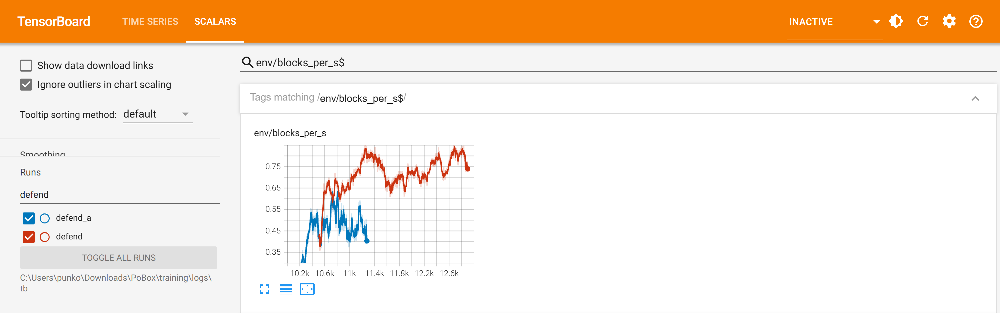
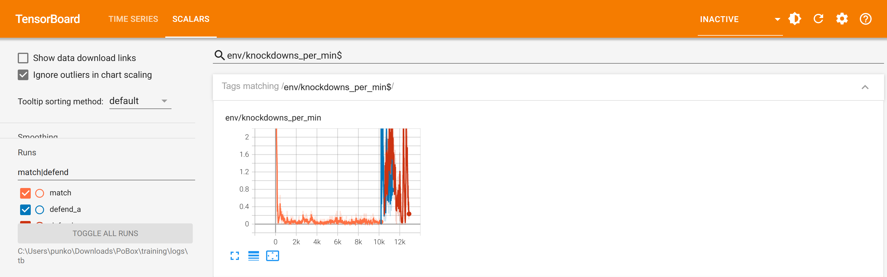
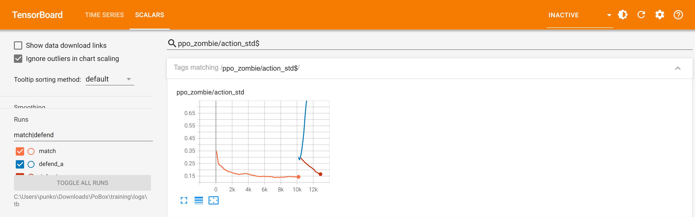

PoBox: the defend rung
1 October 2026 · 20:59 to 23:08 · two runs from the eight-hour match's final policies, compared with it · charts are screenshots of TensorBoard
In short. The eight-hour match left Matt and Zombie standing in range and trading a punch and a half a second each, with no defence and no knockdowns, because nothing in their world punished being hit. This rung gave being hit a consequence, the daze rule: punches to the head add up, a dazed fighter's legs weaken, and enough of it takes the legs away. It also pays a fighter for stopping a punch on its gloves. The first attempt went well for eleven minutes and then fell apart; the second, with the cause of that removed, ran its 2,400 iterations in 88 minutes and ended far better than it began, with one thing undone: Zombie learned to stop punches and Matt did not.
| Run | When | Length | What it was | Outcome |
|---|---|---|---|---|
match | 09:48 to 17:39 | 381 min | the eight-hour match: no consequence for being hit | in the game until tonight |
defend_a | 20:59 to 21:39 | 39 min | the daze rule and the block payment, started as earlier follow-ups were: exploration noise reset to 0.30, entropy bonus on, knockdown bonus 10 | rejected: good to iteration 10,500, then the noise ran away |
defend | 21:40 to 23:08 | 88 min | the same rule, from defend_a's iteration 10,500, with the noise held under 0.32, no entropy bonus, a gentle learning rate, knockdown bonus 6 | accepted: in the game since 23:10 |
The numbers, start and end
| match, under the new rule (where both runs began) | defend_a at its end (rejected) | defend at its end | |
|---|---|---|---|
| Episodes that ended with a fighter on the canvas | 58% | 27% | 7% |
| Matt down | 40% | 14% | 7% |
| Zombie down | 19% | 13% | under 1% |
| Knockdowns a minute | 2.98 | 0.96 | 0.31 |
| Matt's legs taken by the daze, a minute (Zombie's: never, in any column) | 0.01 | 0.75 | 1.26 |
| Punches landed a second, each fighter | 0.71 | 1.04 | 1.34 |
| Speed of a landed punch | 6.6 m/s | 7.0 m/s | 8.3 m/s |
| Matt's | 4.4 m/s | 6.0 m/s | 8.0 m/s |
| Punches stopped on the guard a second, each fighter | 0.20 | 0.44 | 0.76 |
| Zombie | 0.27 | 0.71 | 1.50 |
| Matt | 0.14 | 0.17 | 0.01 |
| Exploration noise | 0.30 | 0.65 | 0.16 |
| Mechanical power, each fighter | 1,290 W | 1,800 W | 690 W |
| Reward a step, Matt / Zombie | +0.21 / +0.28 | +0.30 / -0.35 | +0.69 / +0.78 |
| Return an episode | 30 | -14 | 430 |
Each figure is an average over the training worlds (2,048 rings) with the exploration noise on, as the trainer logs it. "Down" is the share of twelve-second episodes that ended with that fighter on the canvas.
Chart 1: punches stopped on the guard

FOR A TODDLER
When someone tries to bop you, you can put your hands up. The line going up means the boxers put their hands up more and more.
FOR A CHILD
This counts how many punches a second a boxer catches on its gloves or arms instead of on its head. Before tonight nobody bothered, because getting hit cost nothing. Now it costs something, so they started doing it, and the line climbs.
FOR AN ADULT
env/blocks_per_s: per fighter per second, the number of times an opponent's glove closing on the head at over 2 m/s, within 45 cm of it, is met by the fighter's own glove or forearm. The eight-hour match has no curve because the measure did not exist. In defend_a it rose from 0.20 to 0.45 by iteration 10,500; defend took it from there to 0.76. That average hides the split: Zombie 1.50 a second, Matt 0.01.
Chart 2: knockdowns

FOR A TODDLER
This is how often a boxer gets bopped so much it falls on its bottom. Before: never. Now: sometimes.
FOR A CHILD
A knockdown is when one boxer hits the other and the other goes down straight afterwards. In the long run this morning that almost never happened, so the line lies flat on the floor. With the new rule a boxer that takes a lot of punches to the head gets wobbly, and wobbly boxers fall, so the line jumps up.
FOR AN ADULT
env/knockdowns_per_min: falls within a second and a half of a punch from the other fighter, per ring per minute. The match sat at 0.03 to 0.04. Under the new rule the same policies began at 3.0; defend_a had that at 0.40 by iteration 10,500 and let it back up to 0.96; defend ended at 0.31, about eight times the match's rate and a tenth of where the rule started them.
Chart 3: exploration noise, and why the first attempt failed

FOR A TODDLER
To learn, the boxers wiggle a bit to try new things. One line shows them wiggling more and more until they could hardly box. The other shows them wiggling less and less, which is right.
FOR A CHILD
The boxers learn by trying things slightly differently each time, like shaking a little on purpose. A little shaking helps you find better moves. In the first try the shaking kept growing, and a boxer that shakes that much punches badly and wastes its strength. In the second try we put a limit on the shaking, and it settled down by itself.
FOR AN ADULT
ppo_<fighter>/action_std: the standard deviation of the Gaussian policy. In defend_a it rose from 0.30 to 0.65 in forty minutes while the charges for power and jerky actions doubled and Zombie's reward per step went from +0.63 to -0.37. With knockdowns twenty times as frequent, and each worth a one-off bonus of 10, the value loss was about ten times the match's; with advantage estimates that noisy the policy gradient stopped pulling the noise down and the entropy bonus was the only steady force on it. defend has no entropy bonus, a ceiling of 0.32 on the noise and of 5e-4 on the learning rate, and a bonus of 6: the noise went from 0.29 to 0.16 by itself, power from 980 W to 690 W, and both fighters' reward a step rose (Matt 0.55 to 0.69, Zombie 0.55 to 0.78).
Better or worse than before, and why
defend 7%. Knockdowns fell from 3.0 a
minute to 0.31, punches landed rose from 0.7 to 1.3 a second each and got faster (6.6 to 8.3 m/s),
and the fighters do it on half the power. Why: being hit now costs something, so a policy that keeps
its head out of the way, or its gloves in the way, earns more than one that trades.
defend ends at 1.3 a second at 8.3 m/s,
0.31 knockdowns a minute and 7%. The returns (517 then, 430 now) are not comparable: the reward
has terms now that it did not have then.
training/tools/eval_ring.py): neither fighter fell;
Matt's legs were taken ten times, Zombie's never; every one of Zombie's punches was to the head and
none of Matt's. In the game, one full bout at 23:27: Matt was put down once a round, each time by the
daze reaching the line, Zombie never, and it went the distance, Zombie by unanimous decision, 30-24
on all three cards. The game is harsher than the trainer here: in training a fighter whose legs
are taken for 0.7 s keeps its feet about three times in four; in the game it is a knockdown and a
count every time.
What did not get trained
training/envs/getup.py), did not run: before it could start the
owner gave the GPU to another session's eight-hour run of five new boxers. The stage is written and
smoke-tested (put through it, the match policies end on the canvas in about nine episodes in ten and
are back on their feet at the end of about one in a hundred of those), and the game is ready for its
policy. Until it is trained the referee stands a downed fighter up, as before.
training\tools\rungs.ps1 -Only getup runs it: 5,400 iterations, about two and a half hours.